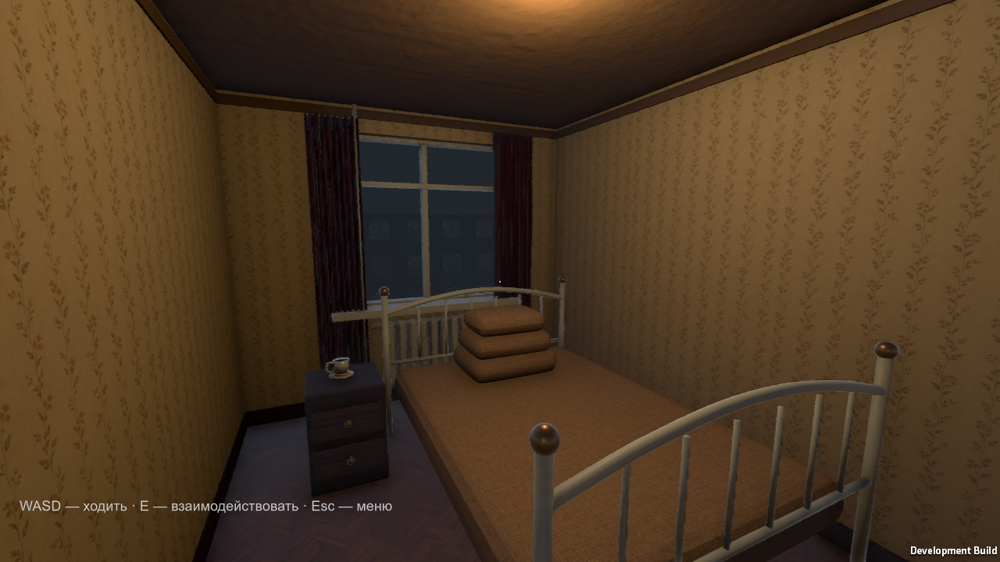
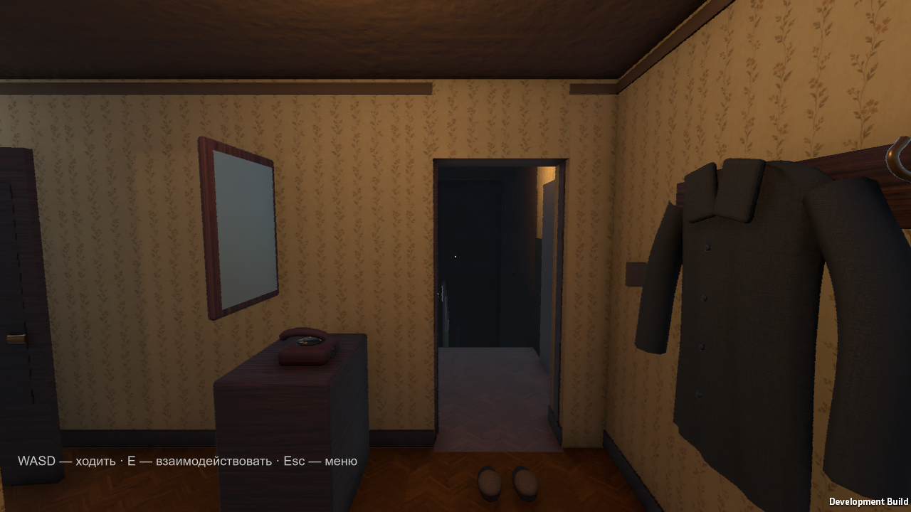
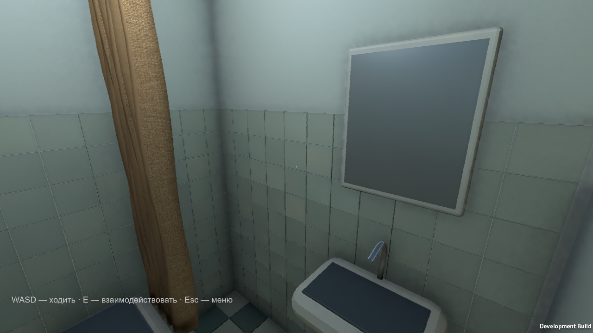
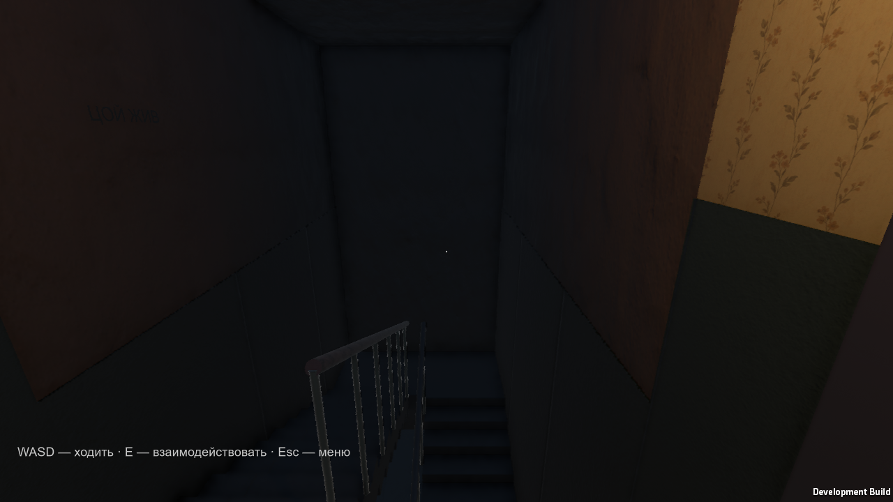

Тёплая комната и холодное окно
Локальные источники света и холодный наружный слой. Наш кадр светлее и более однороден по цвету; это уютное начало, но материалам нужна самостоятельная фактура.
Плотность предметов и материалы
Сравниваем окружение, не наличие персонажа: полки, стекло, дерево, разный масштаб деталей. У референса лучше мелкие надписи, неоднородность поверхностей и естественность раскладки.
Кухня и бытовое наполнение
Дополнительный референс — Home Alone. Разная планировка допустима; оцениваем убедительность мебели, масштаб и контактные тени.
Ночная улица
Сравниваем читаемость планов и точек света. Русский двор должен оставаться узнаваемым и тоскливым; один туман не заменяет предметы и силуэты.
Другие комнаты нашей игры

Спальня
Прихожая
Ванная
Лестница Отключение света
Отключение света